Photo Contact Sheet · Who We Serve
25 Indian-context photos sourced for the 5 industry pages. All CC-BY / CC-BY-SA (Wikimedia Commons) or Pexels free-licence. Review and tell me which to keep, which to swap, and which industries still need more coverage.
Licences: Wikimedia images need an attribution block in the site footer (author + "CC BY-SA 4.0" + link). Pexels is attribution-optional but recommended. I'll auto-generate the attribution HTML once you approve the shortlist.
Legend: CC-BY / Wikimedia Pexels
Law Enforcement 8 candidates
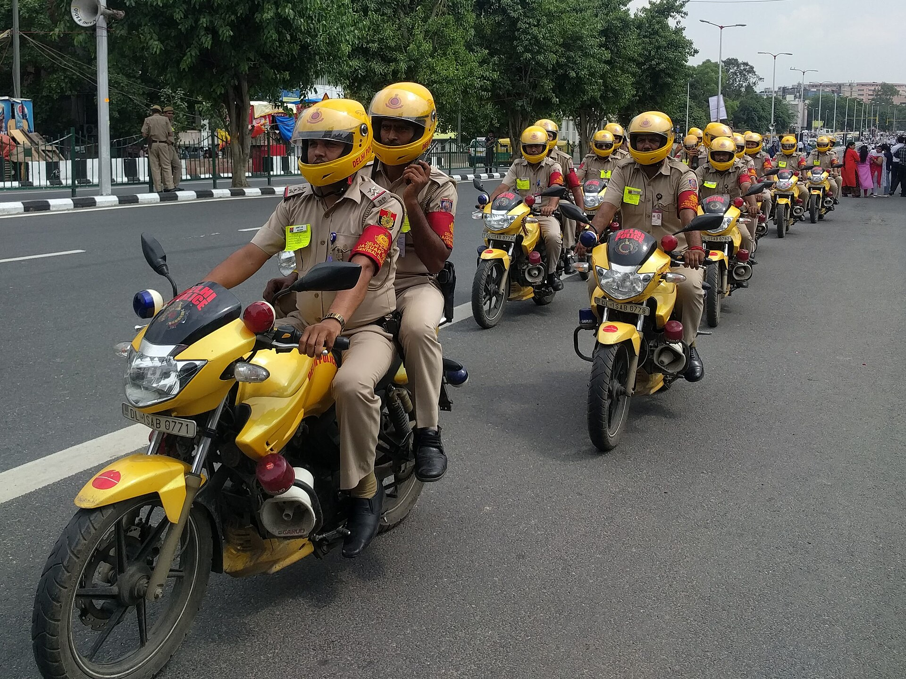
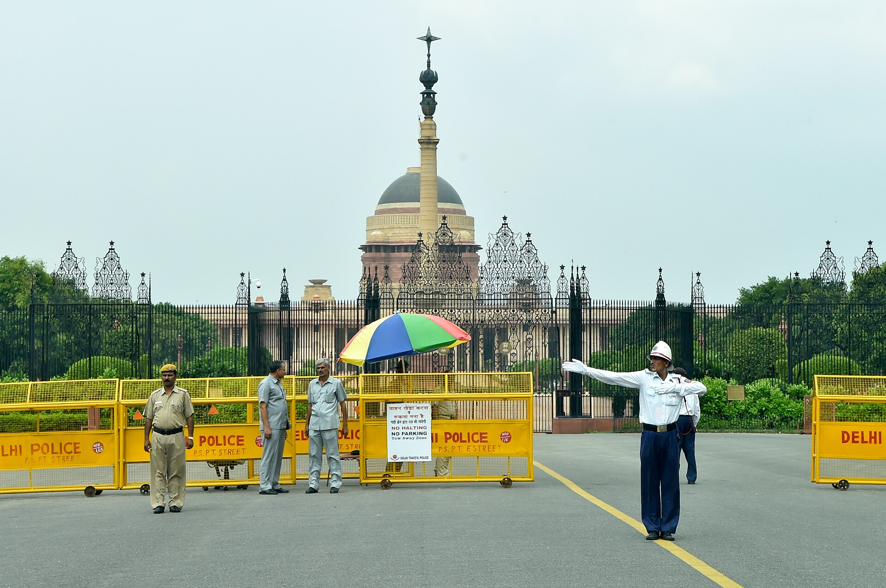
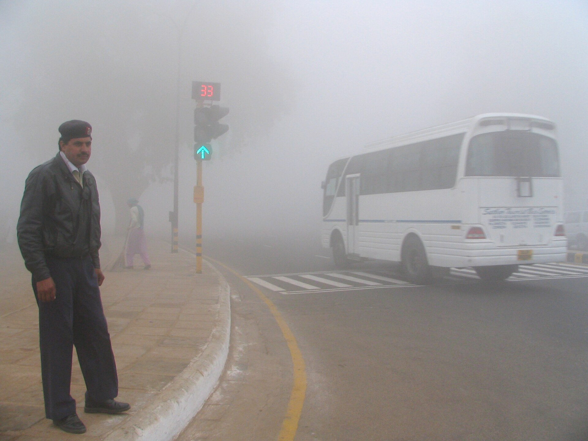
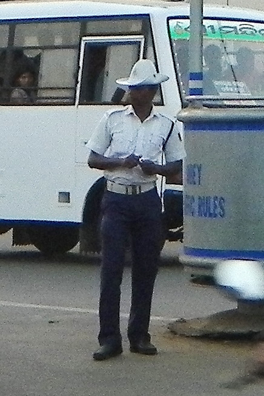
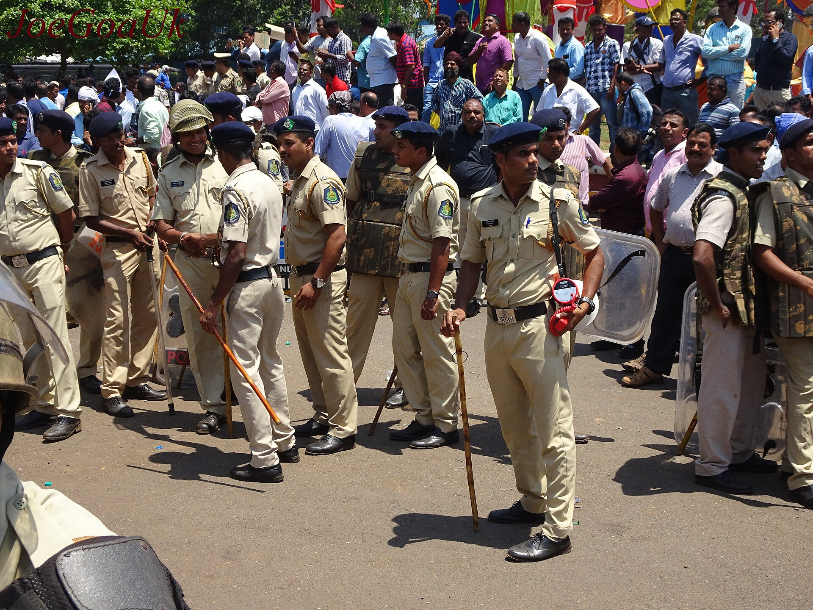
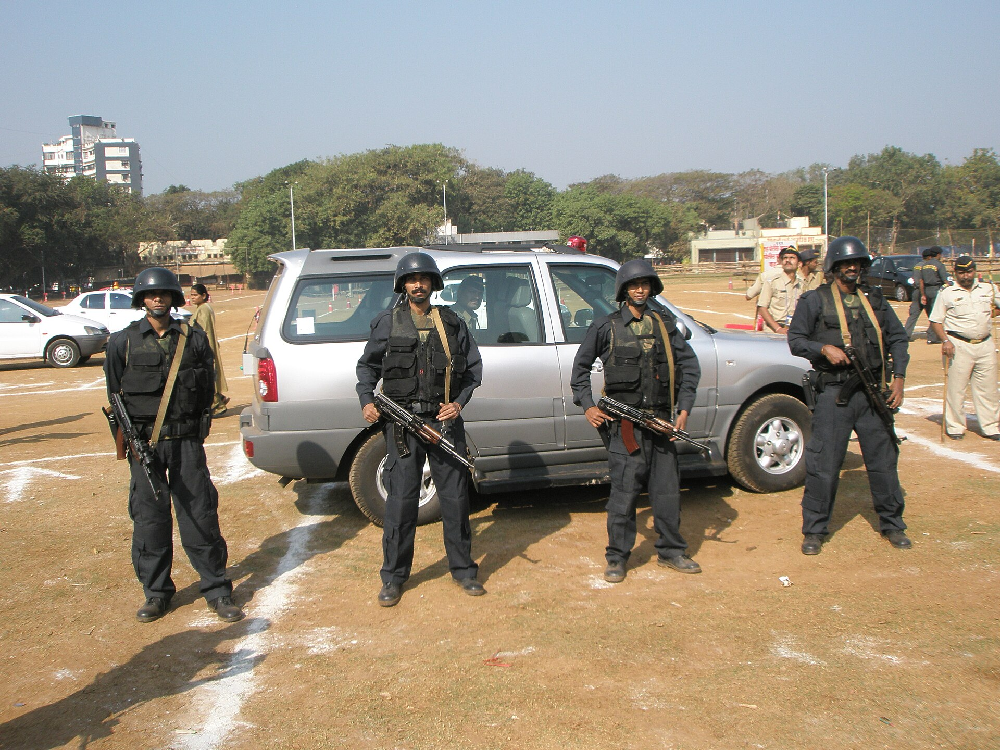
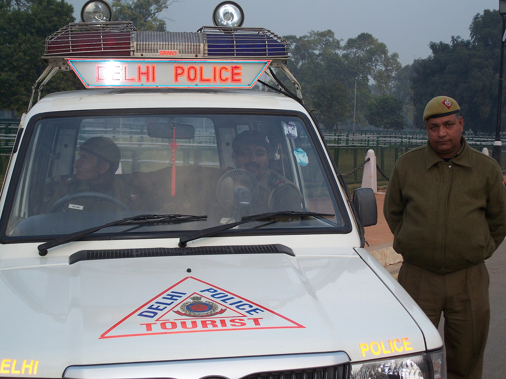
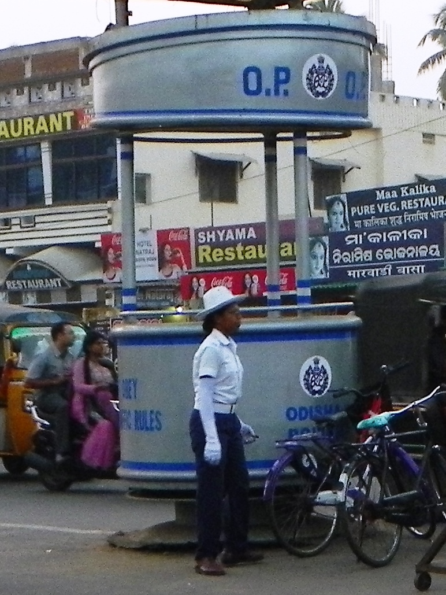
Customs & Border 4 candidates

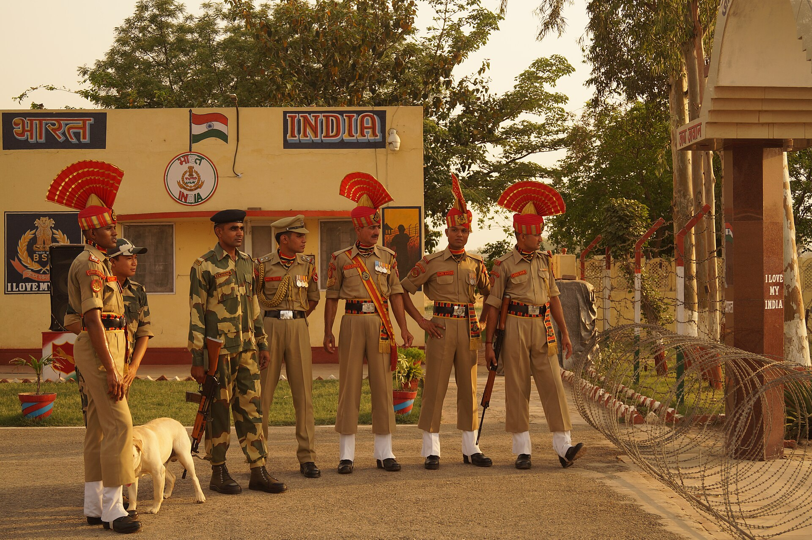


Enterprise Security 5 candidates
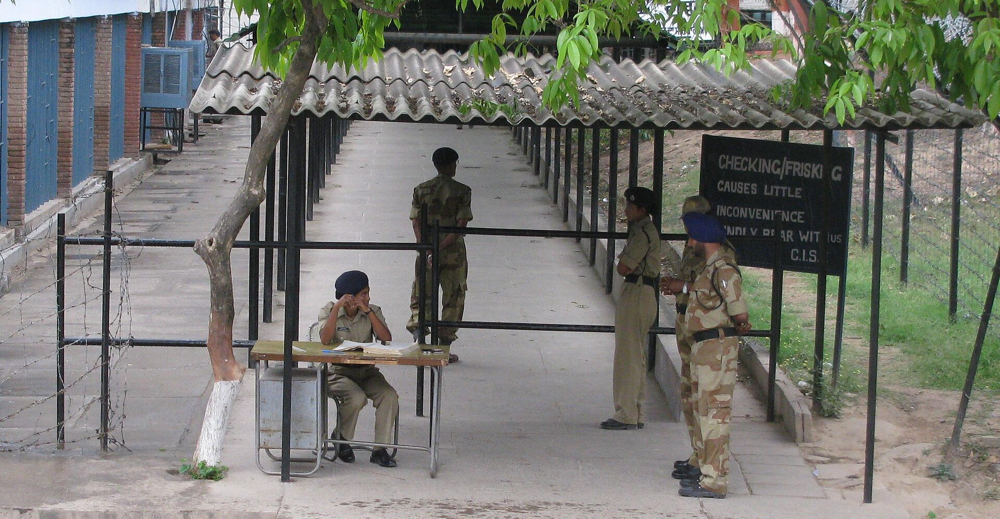
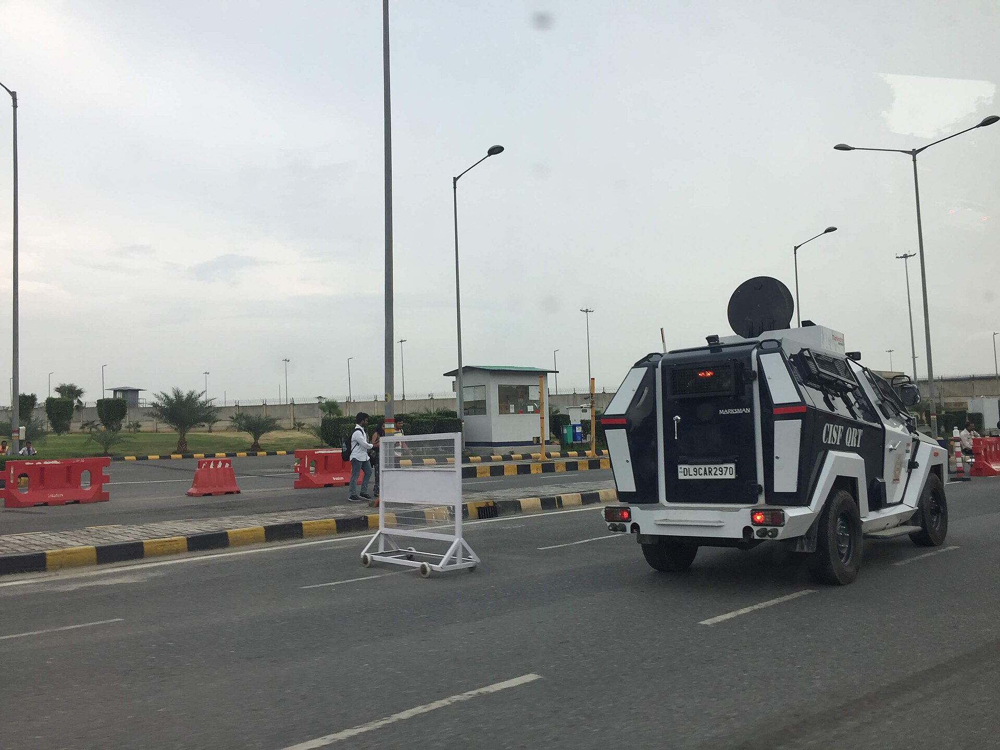
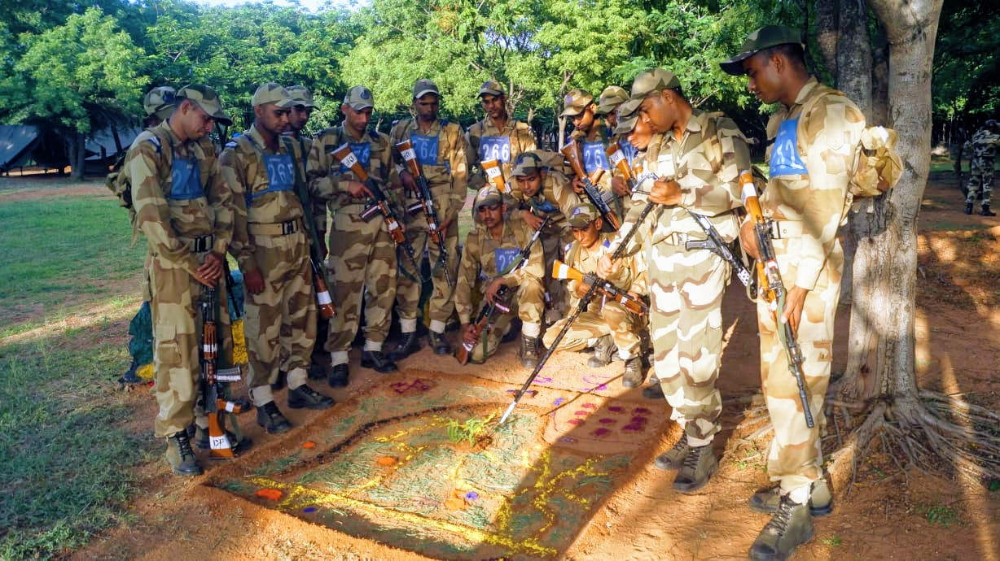
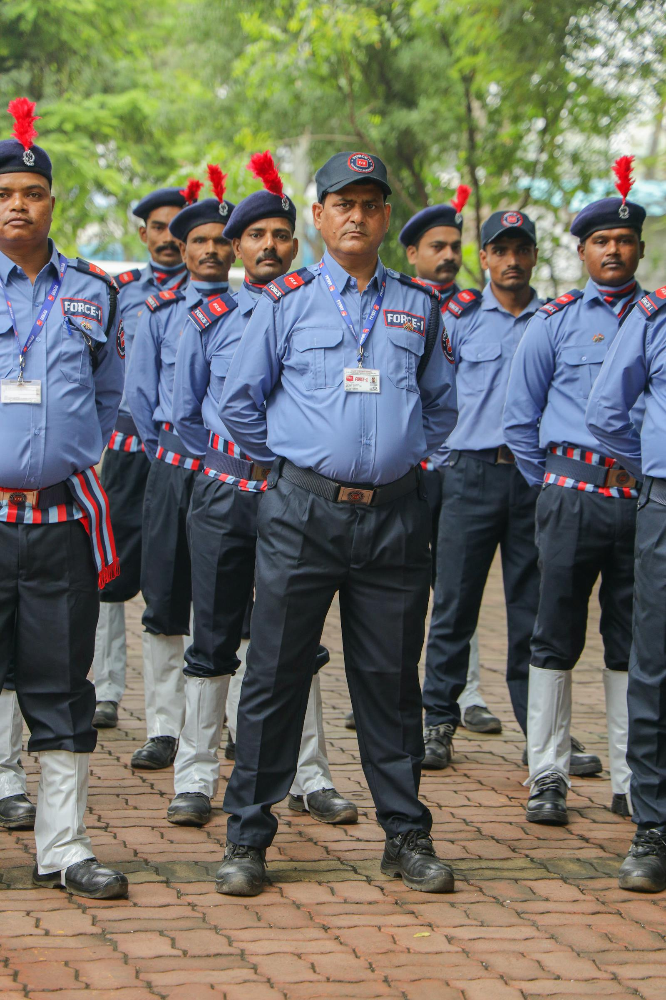
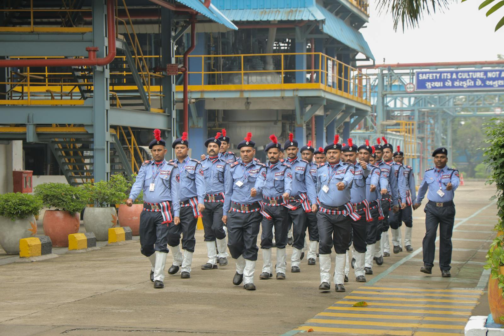
Fire & Emergency 5 candidates


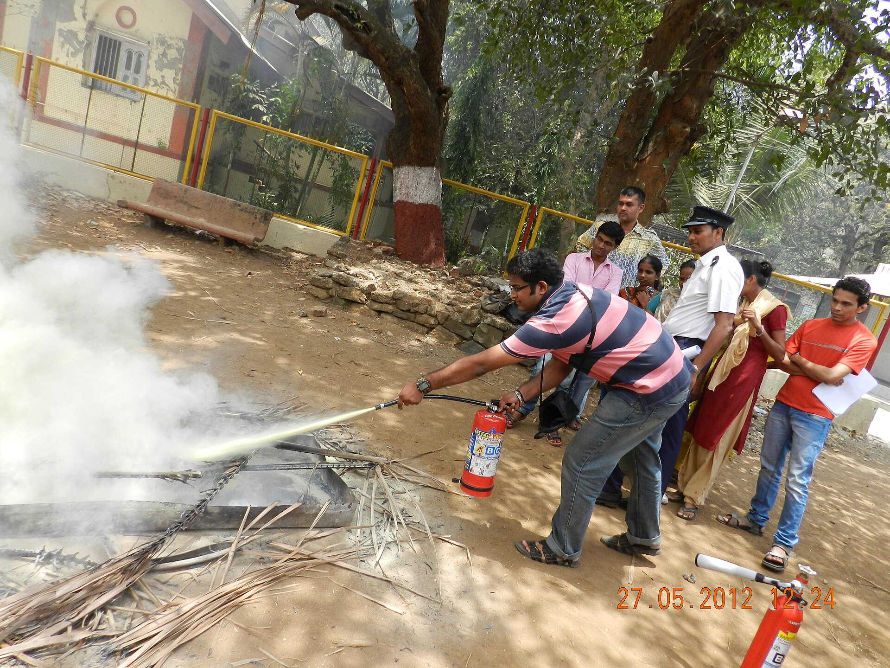
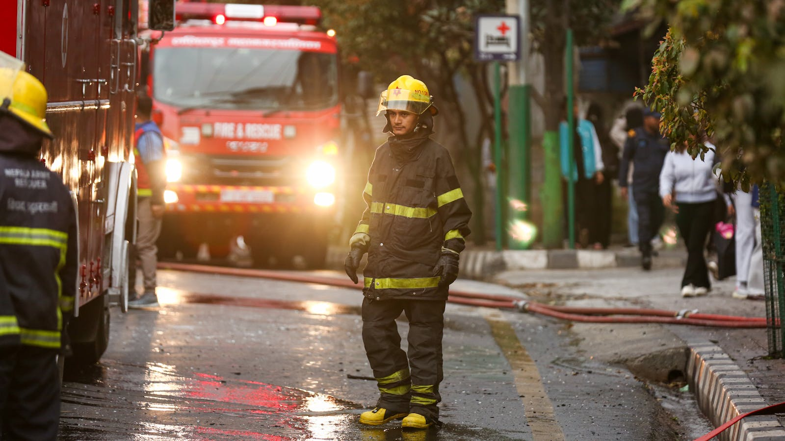

Healthcare & EMS 3 candidates


Gaps to flag
- Healthcare / 108 EMS: only 3 strong picks. Light on "paramedic inside ambulance with patient" and "108 branded ambulance exterior." Can search more or accept current.
- Fire & Emergency: Kolkata blaze is the one true "action" shot. Others lean posed. More NDRF rescue footage would strengthen.
- Customs: only BSF available; actual Indian Customs officers are rarely on Commons. May need to treat Customs as "border forces" (BSF-led narrative).
Next action
Tell me: "approve all" to wire everything in, or call out any specific rejects. I'll then build the 5 industry pages + hub, embed at correct aspect ratios, add attribution block in footer, and rename the section to Who We Serve.